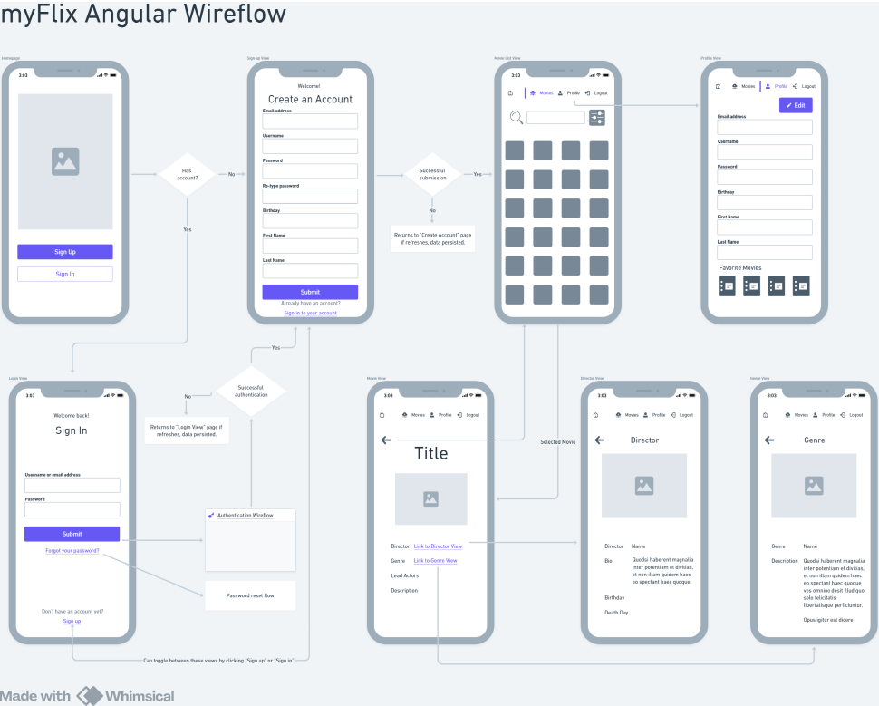

my-flix-angular-client
Welcome to the myFlix Client (Angular)


The client side of the myFlix app using Angular that's using the server-side movie_api (REST API and Database)
This project was generated with Angular CLI version 18.2.9.
Key Features
- Your app should display a welcome view where users will be able to either log in or register an account.
- Once authenticated, the user should now view all movies.
-
Upon clicking on a particular movie, users will be taken to a
single movie view, where additional movie details will be
displayed. The single movie view will contain the following
additional features:
- A button that when clicked takes a user to the director view, where details about the director of that particular movie will be displayed.
- A button that when clicked takes a user to the genre view, where details about that particular genre of the movie will be displayed.
Technical Requirements
The project technical requirements include:
- The application must be written in Angular (version 9 or later)
- The application requires the latest version of Node.js and npm package
- The application must contain user registration and login forms
- The application must be designed using Angular Material
- The application's codebase must contain comments using Typedoc
- The project must contain technical documentation using JSDoc
- The project must be hosted on GitHub Pages
User Stories
App Wireflow

Development server
Run ng serve for a dev server. Navigate to
http://localhost:4200/. The application will
automatically reload if you change any of the source files.
Code scaffolding
Run ng generate component component-name to generate a
new component. You can also use
ng generate
directive|pipe|service|class|guard|interface|enum|module.
Build
Run ng build to build the project. The build artifacts
will be stored in the dist/ directory.
Running unit tests
Run ng test to execute the unit tests via
Karma.
Running end-to-end tests
Run ng e2e to execute the end-to-end tests via a
platform of your choice. To use this command, you need to first add
a package that implements end-to-end testing capabilities.
Further help
To get more help on the Angular CLI use ng help or go
check out the
Angular CLI Overview and Command Reference
page.
API Endpoints
- API is housed on Heroku
- Find the API and it's endpoint documentation here
Database
- myFlixDB is stored in MongoDB
-
Collections include:
- Users
- Movies
- Genres
- Directors
- Actors
License
- API uses ISC
- Angular uses MIT https://angular.dev/license
- RxJS uses Apache-2.0 http://www.apache.org/licenses/
- tslib uses 0BSD